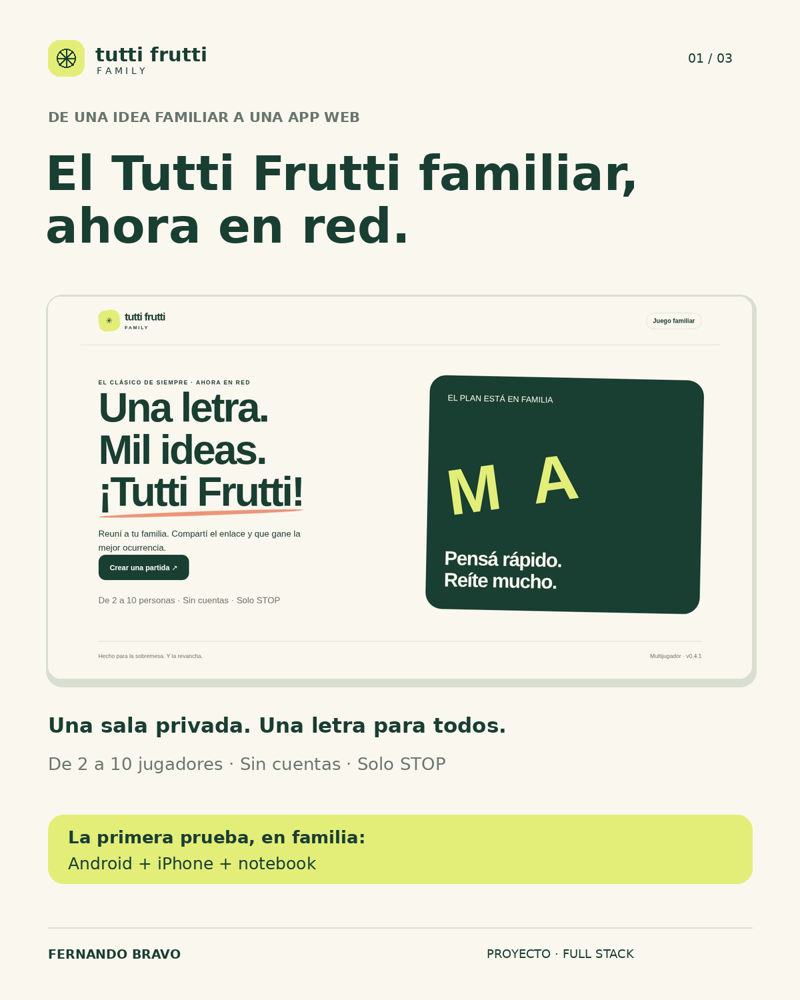
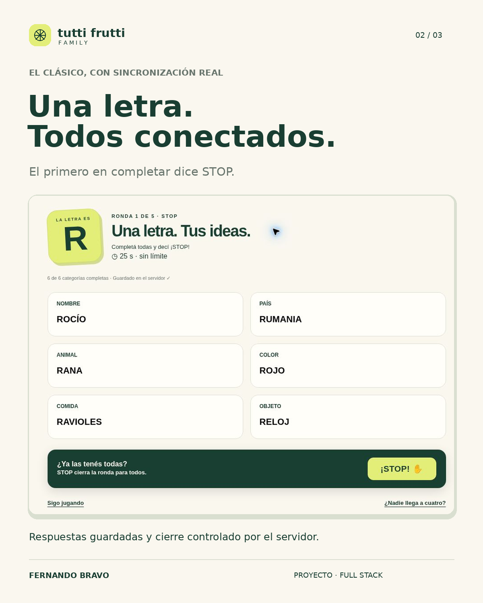

Personal project · Full Stack · Real-time
Tutti Frutti Family
From paper and pens to a multiplayer browser game: a digital take on the classic family activity, playable together or remotely from different devices.
Overview
How it works
A private room, one letter for everyone, categories to complete and STOP to end the round.
Main features
- Multiplayer rooms for 2 to 10 players.
- Synchronized rounds and shared letters.
- Server-side STOP and answer locking.
- Responsive interface for mobile and desktop.
Technical challenge
Socket.IO coordinates game events in real time. The server preserves answers confirmed before STOP and rejects subsequent changes, keeping the round consistent across devices.
Screenshots
From concept to gameplay


Validation
Real-device testing
Test coverage
The project includes 20 automated tests and continues to evolve with user feedback.
Multiplatform
Tested simultaneously on Android, iPhone and a notebook during a family session.